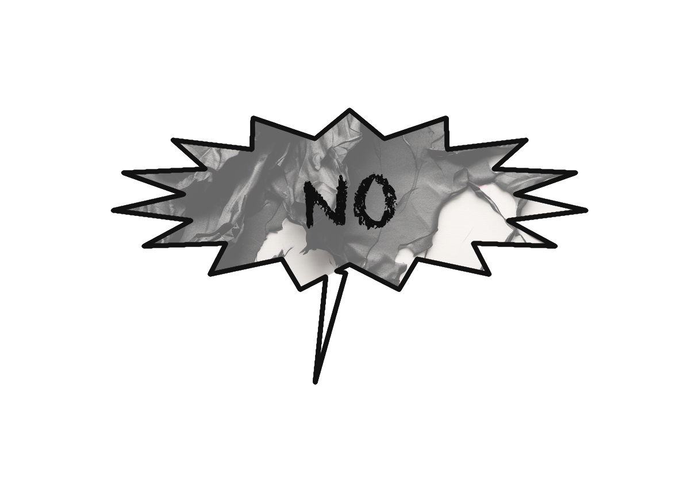
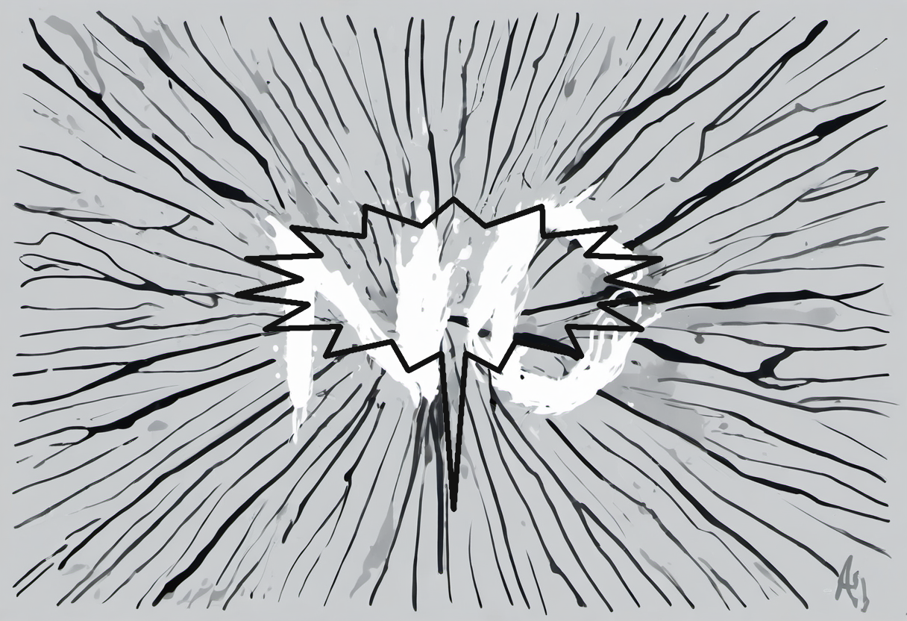
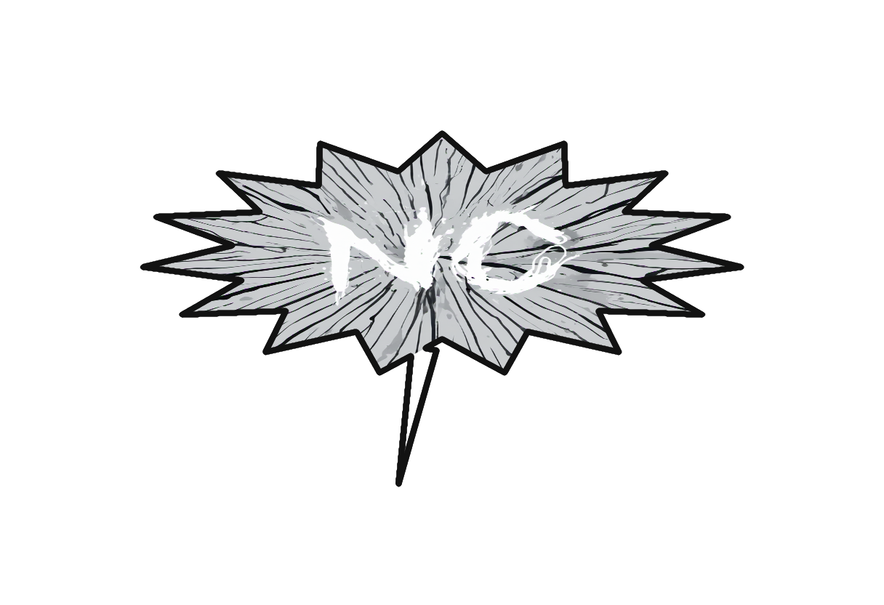
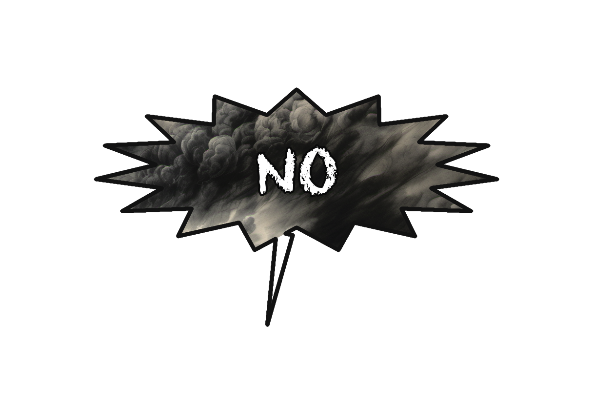
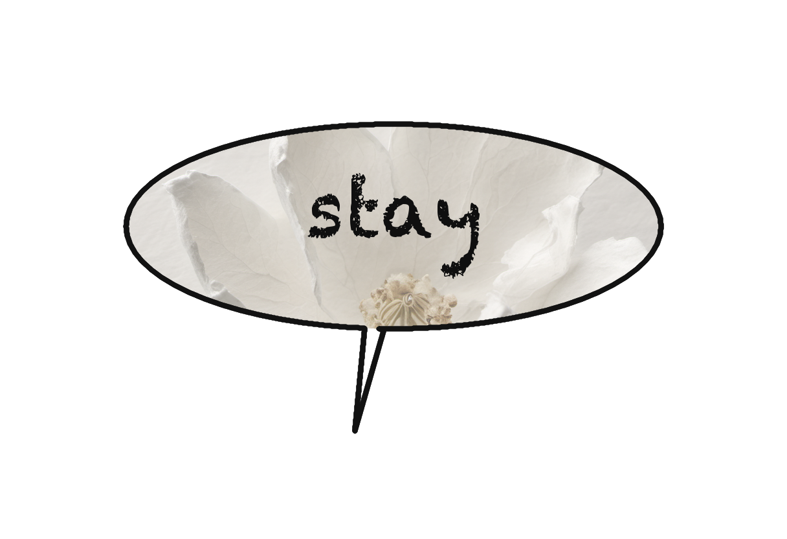
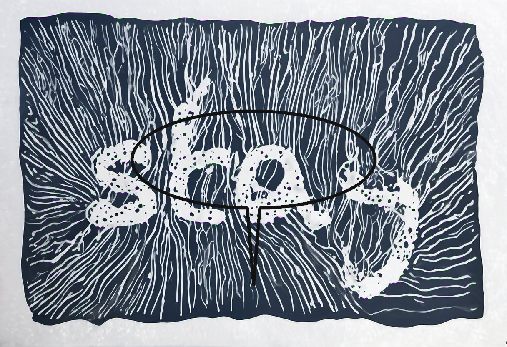
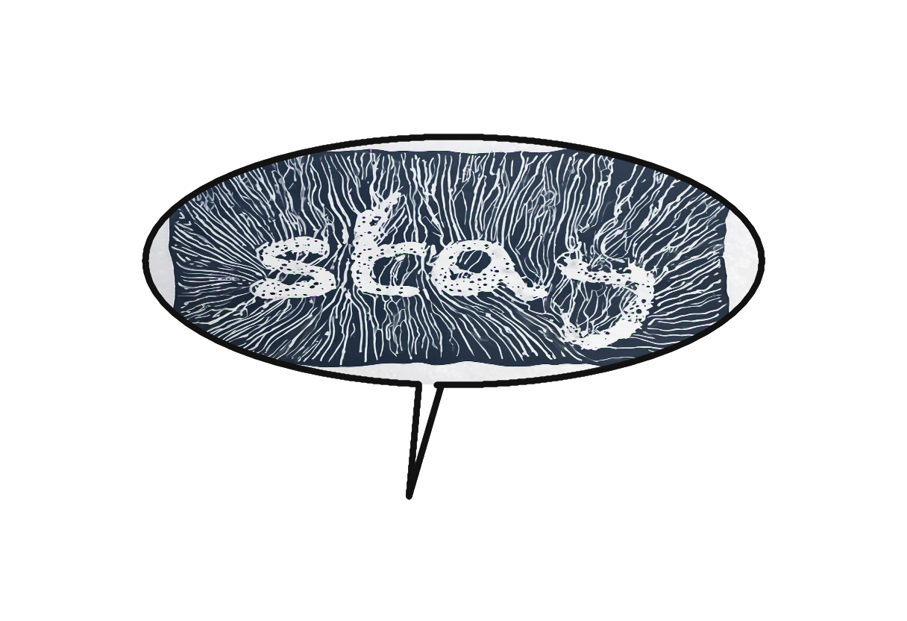
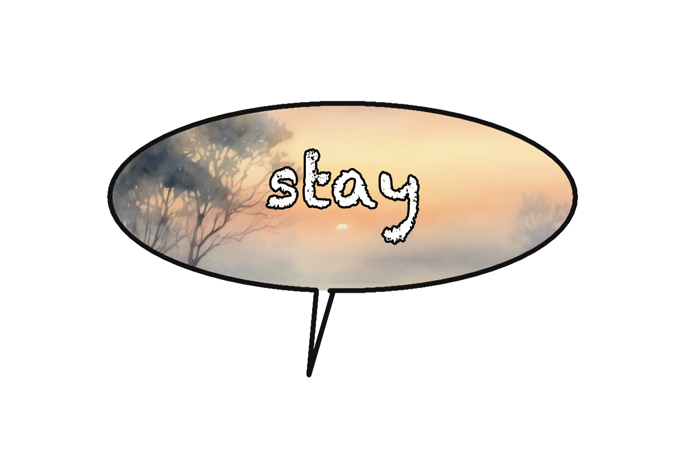

BLUELINE · balloon × gen-AI — four interaction modes
fury — "NO" · shout-spiky

A_styled-box
B_escape
C_clip
D_mind-windowfading — "stay" · whisper-dashed

A_styled-box
B_escape
C_clip
D_mind-window